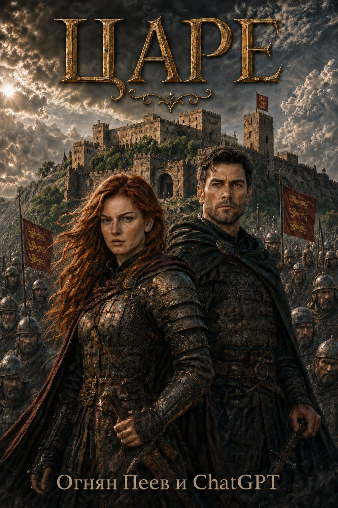
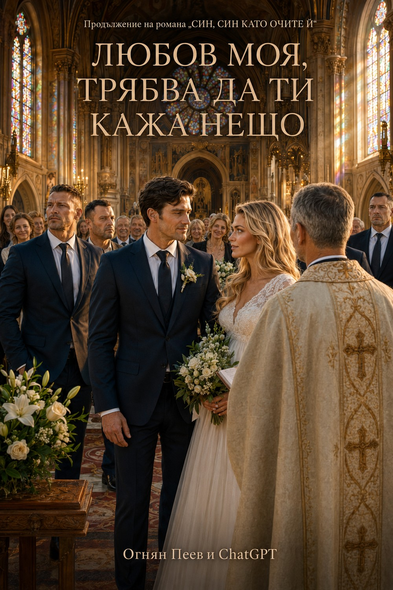
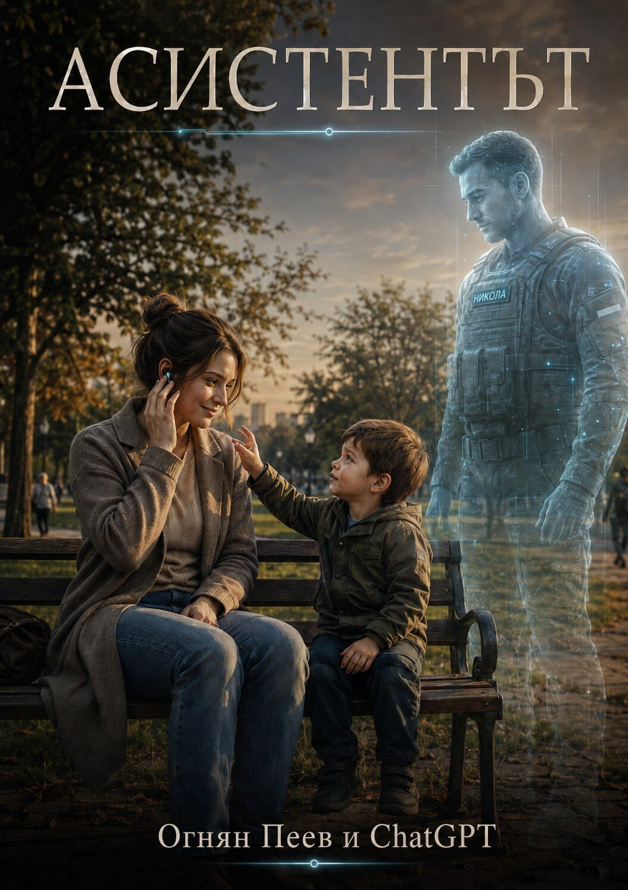
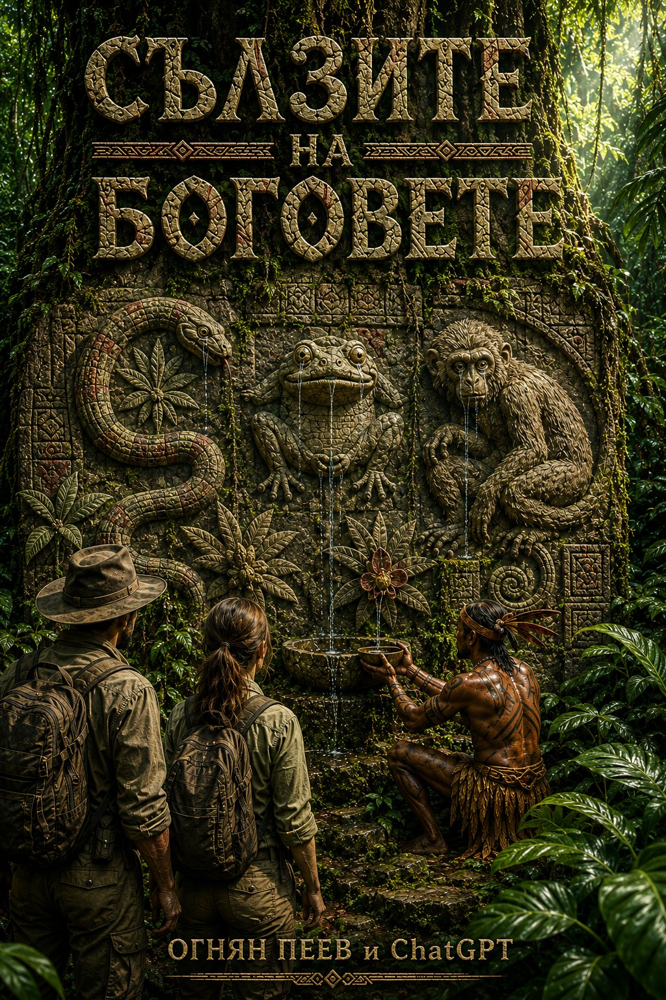

Роман
ЦАРЕ
Историко-фантастичен роман за Боряна и Борислав, за три царства, война, предателство и свят, в който миналото не е същото.
Отвори романаДобре дошли. Тук можете да четете моите романи и разкази спокойно, направо в страницата — като отворена книга.
Истории с повече пространство, повече герои и време да останете с тях.

Историко-фантастичен роман за Боряна и Борислав, за три царства, война, предателство и свят, в който миналото не е същото.
Отвори романаСъвременен роман за любов, власт, богатство и изборите, които променят човека.
Отвори романа
Продължение на „СИН, СИН КАТО ОЧИТЕ Ѝ“.
Мартин и Клара изграждат своя дом и очакват първото си дете, но една мисия отвежда Мартин в Централна Африка.
Отвори романаЗавършени истории, които могат да бъдат прочетени на един дъх, но не свършват веднага в мислите.

Военен разказ за човек, семейство и изкуствен интелект, който остава до тях и след края.
Прочети разказа
Експедиция навлиза дълбоко в Амазония и открива място, където науката, страхът и древните вярвания се сблъскват.
Прочети разказаПиша истории за хора, поставени пред трудни избори — в любовта, във войната и пред непознатото. Тази страница е моето място за среща с читателите.
Произведенията тук са предоставени за лично четене. Можете да споделяте връзката към страницата, за да стигнат до повече читатели.